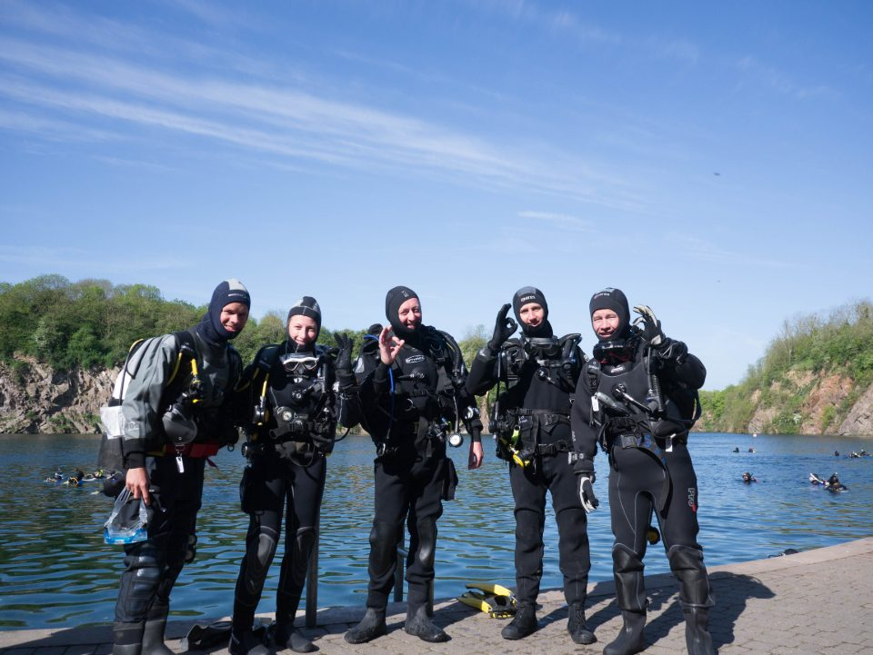
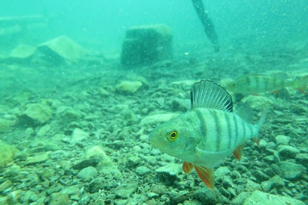
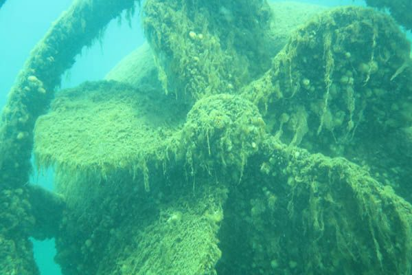
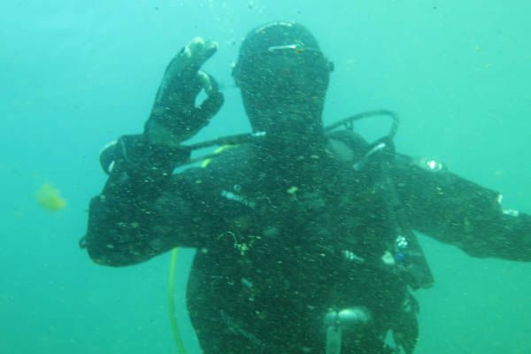

Stoney Cove, May 2016

Having joined in Autumn 2015, this month three brand new Argonauts members achieved their Ocean Diver qualification!
Training was carried out over the Winter at our regular Tuesday evening pool sessions in Victoria, London - none of the group had ever dived before. After learning all the necessary skills, gaining confidence and waiting for warmer weather(!), we spent the weekend at Stoney Cove to try everything out in open water.
With excellent visibility and excellent training from Argonauts instructors, we have four really enjoyable dives down to 20m. We even found nessie, some monster pike and a huge shoal of perch.
At the same time, another established member progressed from Ocean Diver up to Sports Diver.
Now, as proper BSAC divers, we can't wait to get out into the sea!
If you're thinking of learning to dive, then don't hesitate to get in touch.


